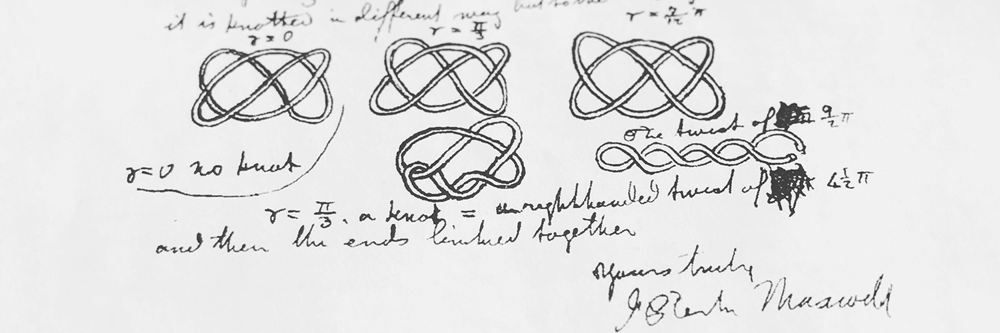

Research
Phylogenetics
How to record and represent evolution? What are the patterns observed in pathogen evolution? What mathematical models can reproduce the evolutionary patterns? How to predict evolution? What can we learn from the evolution of pathogens to help solve problems in public health and medicine?
Publications and preprints
Analyzing phylogenetic trees with a tree lattice coordinate system and a graph polynomial
Pengyu Liu, Priscila Biller, Matthew Gould and Caroline Colijn
Systematic Biology, 2022
The impact of sampling bias on viral phylogeographic reconstruction
Pengyu Liu, Yexuan Song, Caroline Colijn and Ailene MacPherson
PLOS Global Public Health, 2022
Comparing the topology of phylogenetic network generators
Remie Janssen and Pengyu Liu
Journal of Bioinformatics and Computational Biology, 2021
A tree distinguishing polynomial
Pengyu Liu
Discrete Applied Mathematics, 2021
Invited Conference Talks
- Comparing the topology of phylogenetic network generators
RECOMB – Comparative Genomics, Online
September 2021 - A tree distinguishing polynomial - an introduction to polynomial tree metrics
SMB Annual Meeting, Université de Montréal, Montréal, QC
July 2019 - A tree distinguishing polynomial - an introduction to polynomial tree metrics
CAIMS Annual Meeting, Whistler, BC
June 2019 - A tree distinguishing polynomial - an introduction to polynomial tree metrics
CanaDAM 2019, Simon Fraser University, Vancouver, BC
May 2019
Infectious diseases
What are the patterns in infectious diseases transmission? How is human behavior related to the heterogeneous patterns of infectious disease distribution in host populations? How can genomic data help in analyzing and predicting infectious disease transmission?
Publications and preprints
The potential of genomics for infectious disease forecasting
Jessica Stockdale, Pengyu Liu, and Caroline Colijn
Nature Microbiology, 2022
Modelling the impact of household size distribution on the transmission dynamics of COVID-19
Pengyu Liu, Lisa McQuarrie, Yexuan Song and Caroline Colijn
Journal of the Royal Society Interface, 2021
Using machine learning to detect coronaviruses potentially infectious to humans
Georgina Gonzalez-Isunza, Muhammad-Zaki Jawaid, Pengyu Liu, Daniel Cox, Mariel Vázquez, Javier Arsuaga
Preprint, 2022
Media Coverage
- B.C. researchers say genomic data can improve pandemic modelling
North Shore News
October 2022 - Crowded households and COVID-19
CBC Radio - On The Coast with Gloria Macarenko
April 2021 - A COVID culprit: crowded households. And more news from science journals
The Tyee
April 2021 - Her husband got COVID-19. She’s suing his employer
Bloomberg Opinion
February 2021
Social science and linguistics
Why do stock prices fluctuate? What is the role of conformity and anticonformity in determining stock prices? Why are we experiencing more communities internally conflicting or extremizing as the internet develops? Do the shapes of social networks have effects on this? How to measure syntax diversity in language acquisition? Is Korean more similar to Chinese or Turkish in terms of syntax?
Publications and preprints
Quantifying syntax similarity with a polynomial representation of dependency trees
Pengyu Liu, Tinghao Feng and Rui Liu
Glottometrics, 2022
Effects of network topology and trait distribution on collective decision making
Pengyu Liu and Jie Jian
Preprint, 2022
Topology
What is topology? Can we generalize topology to other areas of mathematics than geometry? What are knots and links? How to efficiently compute invariants of knots and links? Can we find more invariants of knots and links, especially the ones that are easy to compute?
Publications and preprints
A diagrammatic approach for determining the braid index of alternating links
Yuanan Diao, Claus Ernst and Gábor Hetyei and Pengyu Liu
Journal of Knot Theory and Its Ramifications, 2021
The braid index of reduced alternating links
Yuanan Diao, Gábor Hetyei and Pengyu Liu
Mathematical Proceedings of the Cambridge Philosophical Society, 2020
The HOMFLY polynomial of links in closed braid form
Pengyu Liu, Yuanan Diao and Gábor Hetyei
Discrete Mathematics, 2019
A generalized Hamming distance of sequence patterns
Pengyu Liu and Jingzhou Na
Preprint, 2022
Invited Conference Talks
- A diagrammatic approach for determining the braid index of alternating links
The Geometry and Topology of Knotting and Entanglement in Proteins, CMO-BIRS Workshop, Oaxaca, Mexico
November 2017 - The braid index of reduced alternating links
AMS Sectional Meeting, University of Saint Thomas, Minneapolis, MN
October 2016 - The HOMFLY polynomial of links in closed braid form
Workshop on Graphs and Knots, Xiamen University, Xiamen, China
June 2016
Structural genomics
What are the structures of genomes and proteins that appear in nature? How do they form and what are their origins? What structures cause diseases? How do they cause diseases? What genomic or protein structures are in pathogens? How to model different structures of genomes?
Publications and preprints
Characterizing the topology of kinetoplast DNA using random knotting
Pengyu Liu, Ryan Polischuk, Yuanan Diao and Javier Arsuaga
Topology and Geometry of Biopolymers, Contemporary Mathematics, 2020
Estimating properties of kinetoplast DNA by fragmentation reactions
Lara Ibrahim, Pengyu Liu, Michele Klingbeil, Yuanan Diao and Javier Arsuaga
Journal of Physics A: Mathematical and Theoretical, 2019
Invited Conference Talks
- Monte-Carlo Model for Kinetoplast DNA Networks
CAIMS Annual Meeting, University of British Columbia, Kelowna, BC
June 2022 - Estimating properties of kinetoplast DNA by fragmentation reactions
Workshop on Knotted Fields, Beijing University of Technology, Beijing, China
September 2019